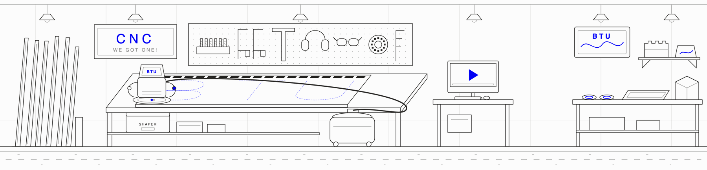

Shaper Origin · ShaperTape · Router bits · Plywood · Inlays & signs
WE GOT ONE!
CNC equipment and materials are labeled BLUE.
FACULTY: Class assignments requiring Shaper CNC should be coordinated by LAs, TAs, or instructors. (Questions: zack.weaver@colorado.edu)
STUDENTS: Assistance with Shaper CNC for class assignments should be coordinated with class LAs or TAs first, then "BTU Mischief Makers", if available.
EVERYBODY: A brief training is required before using the Shaper CNC.

'Cause I'm C N C ...Dynamite!
Thanks to generous support BTU purchased a Shaper Origin CNC router in 2026!
Basic operation of the Shaper can be found here: www.youtube.com/watch?v=QxjE5WOAGi4
The Shaper is a precision (expensive) tool! Please contact Zack at zack.weaver@colorado.edu to get started.